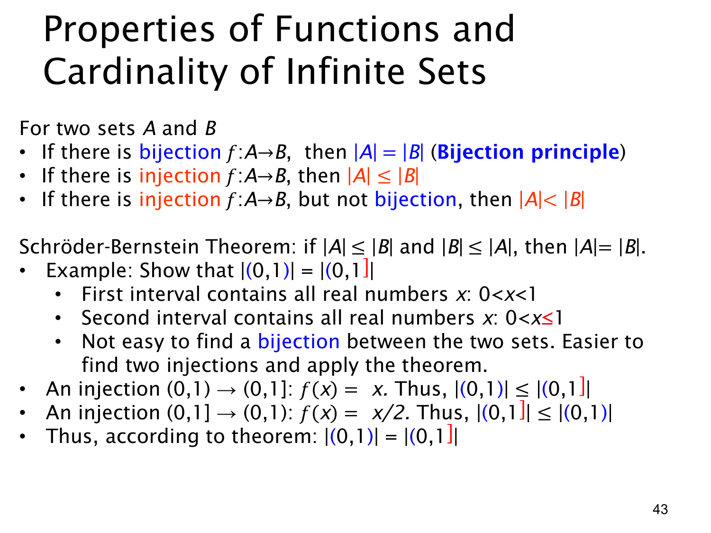

L1.4 · 第 43 页讲解原文
查看这一页课件

用单射比较无限基数：施罗德—伯恩斯坦定理
对集合 A,B，若存在双射 A→B，则 ∣A∣=∣B∣。若存在单射 A→B，则表示 A 可一一嵌入 B，记作 ∣A∣≤∣B∣。施罗德—伯恩斯坦定理（Schröder–Bernstein theorem）进一步说：若两个方向都能找到单射，即 ∣A∣≤∣B∣ 且 ∣B∣≤∣A∣，就必然存在双射，故 ∣A∣=∣B∣。
课件例子比较开区间 (0,1) 与右端点闭合的 (0,1]：
- 从 (0,1) 到 (0,1]，用 f(x)=x。它是单射，因为不同的 x 仍是不同输出。
- 从 (0,1] 到 (0,1)，用 g(x)=x/2。当 0<x≤1 时有 0<x/2≤1/2<1，所以输出确在 (0,1)；除以非零常数 2 也保持不同输入不同输出，因此是单射。
两边都能嵌入对方，定理给出 ∣(0,1)∣=∣(0,1]∣。两个区间作为集合并不相等，因为 1∈(0,1] 而 1∈/(0,1)；这里相等的是基数。
原页第三条声称“若有一个单射 A→B，但它不是双射，则 ∣A∣<∣B∣”，对无限集合并不成立。例如 n↦2n 是从 N 到 N 的单射，没命中奇数，因此不是双射，但两边当然仍有相同基数（恒等映射就是双射）。要断定 ∣A∣<∣B∣，必须有 A 可嵌入 B，并且不存在任何从 B 到 A 的单射；不能只看选定的那一个函数是否满射。此处已另列勘误，保留原页图和逐页讲解原文。
查看本页勘误
L1.4 第 43 页：非满射的单射不意味着严格更大基数
课件写“若存在单射 f:A→B，但 f 不是双射，则 ∣A∣<∣B∣”。这对无限集合是错误的：取 A=B=N，f(n)=2n 是单射，但未命中任何奇数，故不是双射；然而 ∣A∣=∣B∣，例如恒等函数就是两边的双射。
正确说法是：存在单射 A→B 可得 ∣A∣≤∣B∣。要得到严格不等式 ∣A∣<∣B∣，还需排除任何双射；等价地，结合施罗德—伯恩斯坦定理，需要不存在从 B 到 A 的单射。课件随后以两方向单射证明 ∣(0,1)∣=∣(0,1]∣ 的例子本身是正确的。原课件图和逐页讲解原文保持不变。